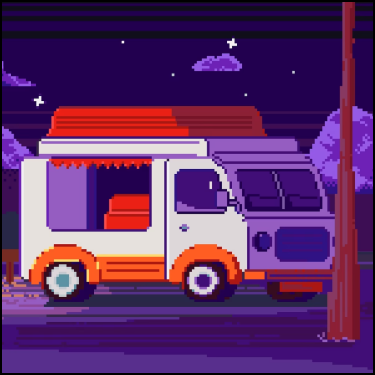

-
Фритрек и нулевой спринт: Подготовка к работе
 </шик>Это было самое начало пути. На этом этапе важно было проникнуться основами и настроиться на учёбу. И, возможно, подумать, как новые знания могут повлиять на ваше будущее.
«Сделай первый шаг, и ты поймёшь, что не всё так страшно». — Сенека.
-
1 спринт: Я — чистый лист
 </шак>
</шак>
На первых этапах мы работали со страхами и сомнениями, которые часто испытывают новички. Один из них — страх перед чистым листом. Это, конечно же, намного сложнее, чем боязнь куска бумаги. Часто за этим ощущением скрываются более глубокие вопросы: с чего начать? а вдруг будет слишком сложно? что, если я не справлюсь?
Страх чистого листа — это была боязнь начать что-то новое и потерпеть неудачу.
-
1 спринт: А если не получится?
</шок>Первый проект — позади! Но это всё ещё самое начало пути. Радость могла быстро померкнуть и смениться ожиданием провала. Или вы, наоборот, могли вдохновиться успехами и поверить в себя.
Это было тяжело, но очень увлекательно.
-
2 спринт: Погоня за идеалом
<памагите>На этом этапе вы уже достаточно разбирались в основах вёрстки, чтобы понять, как много ещё впереди. Вы могли попытаться погнаться за идеалом и понять, что он недостижим. А, может, вы вовсе и не подвержены перфекционизму и вместо того, чтобы сделать идеально, старались просто сделать.
На данном этапе хотелось, просто, понять и простить.
-
2 спринт: О тех, кто рядом
 <happy>
<happy>
Всё это время вы были не одиноки (хотя, возможно, иногда и чувствовали, что одни против целого мира). Вас окружали одногруппники, команда сопровождения и просто близкие люди, которым можно пожаловаться, если очередной макет просто так не поддавался. Осваивать что-то новое легче, когда рядом есть единомышленники, не правда ли?
Преодолевать сложности при создании макетов становится значительно проще, когда рядом находятся те, кто разделяет интересы и готовы помочь справиться с трудностями.
-
3 спринт: Обходные стратегии
 <sleep>
<sleep>
На этом курсе вы постоянно решали разные задачи. В какой-то момент вам могло показаться, что решения просто иссякли. Значит, пришло время посмотреть на задачу под другим углом.
Пришло время пойти оттдохнуть и только после этого ты найдешь верное решение.
-
3 спринт: Когда опускаются руки
 <понять и простить>
<понять и простить>
Во время учёбы часто возникает чувство, когда не знаешь, за что хвататься. Вроде и проектную пора сдавать, и задачи хочется порешать, и в теории получше разобраться, и жизнь не забыть пожить. В такие моменты очень нужна концентрация. Вспомните, откуда вы её черпали.
Не смотри на то, как много еще предстоит сделать, смотри на то, как далеко ты уже продвинулся. Эта мысль не дает опускать руки.
-
«Сейчас я здесь»
<кто ты воин?>Сейчас вы уже очень много знаете о вёрстке. Но это только начало. Во-первых, впереди ещё много материала про «красотищу». Во-вторых, с окончанием курса учёба не заканчивается. Вёрстка — это целый мир. И этот мир постоянно меняется. Познать его полностью не получится, но это тот случай, когда важен сам процесс познания. Ведь часто путь — и есть результат.
Магия происходит, когда ты выходишь за пределы своей зоны комфорта и начинаешь верить в свои силы.